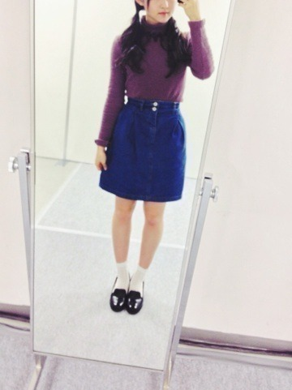
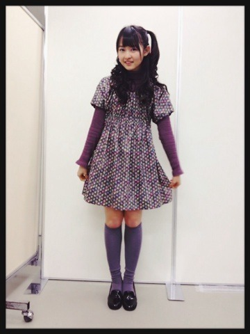

| 2014/01 20 Mon | 滲んで消えない。539 回目 |
昨日は幕張メッセで個握でした！
初の4部で嬉しかったです。
髪型は巻いて
1部 耳の下ツイン
2部 三つ編みみたいなツイン
3部 耳の上ツイン
4部 ハーフツイン
ツインしかしてない笑

ピンクのキラキラのメイク

1部2部は珍しくタイトなシルエット
On y vuaのタートルネック
mysticのスカート、靴
シンプルな感じ

3.4部ではおいシャン握手会でも着た
母が作ったワンピ着まわしたよー
このワンピースを覚えてる方が
何人かいてびっくりした！！
すごいすごい
そんでハーフツインだよー
見てーハーフツインだよー
たまにはこういう髪型や格好に
挑戦するのも楽しい。
サンドアートに感動したと
たくさんの方に
嬉しいことばをいただきました。
NOGIBINGO!2の早泣きについて
EX大衆やLARMEの感想も
ありがとう！！

オフショット
まりか
コメント(473)
2014/01/20 14:42